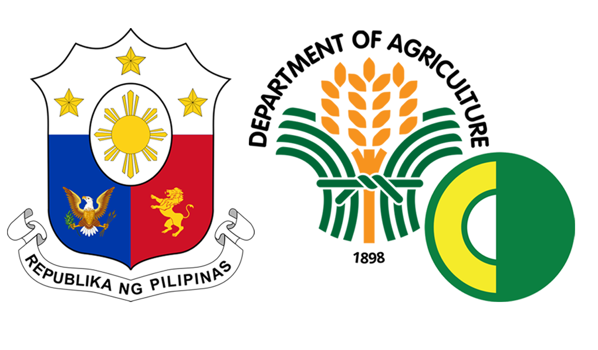

Department of Agriculture
PHILIPPINE COCONUT AUTHORITY
PCA-DRC Compound, Bago Oshiro Tugbok, Davao City
Philippine Standard Time
Saturday, January 28, 2023


History
The Philippine Coconut Authority was created pursuant to Presidential Decree 232 on June 30, 1973. It absorbed and assumed the powers and functions of the then Coconut Coordinating Council (CCC), the Philippine Coconut Administration (PHILCOA) and the Philippine Coconut Research Institute (PHILCORIN).
Today, it is the sole government agency that is tasked to develop the industry to its full potential in line with the new vision of a united, globally competitive and efficient coconut industry.
PCA THROUGH THE YEARS
1940. National Coconut Corporation (NACOCO) was created to promote the growth and development of the coconut industry.
1954. NACOCO became the Philippine Coconut Administration (PHILCOA) with the same function and responsibilities. Ten years later, it expanded its scope of operations and renamed as Philippine Coconut Research Institute (PHILCORIN) an agency created to monitor, evaluate and conduct researches on the coconut.
1971. NAt the height of the Period of Expansion, the Coconut Coordinating Council (CCC) was created in lieu of PHILCORIN and was tasked to supervise, coordinate and evaluate the implementation of the coconut self-sufficiency program of the government.
1973. Agencies lacked singleness in its purpose and the framework upon which they operated did not revolve around the total development of the coconut industry where coconut farmers stood at the focal point. In view of this, Government deemed it necessary to create an agency that would address that situation, thus, the Philippine Coconut Authority was created in June 30, 1973 by virtue of P.D. No. 232. It absorbed and assumed the powers and functions, including the personnel and assets of the then defunct CCC, PHILCOA, and the PHILCORIN.
1976. Philippine Coconut Authority became an independent public corporation on July 14, 1976 pursuant to P.D. No. 961, reporting directly and supervised solely by the Office of the President. This Decree was the first codification of the laws dealing with the development of the coconut and other palm oil industry.
1978. The Code was later revised on June 11, 1978 by P.D. No. 1468 ("Revised Coconut Industry Code") which eventually became the charter of PCA as a public corporation.
1987. On January 30, 1987, pursuant to Executive Order No. 116, the Philippine Coconut Authority was officially declared as an attached Agency of the Department of Agriculture (DA). The declaration of transfer to DA from the Office of the President was enacted to provide overall coordination and monitoring of policies and programs of various sectors in agriculture. The attachment was confirmed and incorporated in the Administrative Code of 1987.
2014. By virtue of Executive Order No. 165 issued on May 15, 2014, the Philippine Coconut Authority, National Food Authority, National Irrigation Administration, and Fertilizer and Pesticide Authority were transferred from the Department of Agriculture to the Office of the President. The declaration of transfer of these agencies to the Office of the President was enacted to enhance and coordinate the efforts of the PCA, NFA, NIA and FPA in fulfilling their respective mandates.
2016. On June 30, 2016, pursuant to Executive Order No. 01, the Philippine Coconut Authority was one of the 12 agencies placed under the supervision of the Office of the Cabinet Secretary. The declaration of supervision of the agency was enacted to develop and evaluate poverty reduction programs to reduce both the incidence and magnitude of poverty.
2018. On September 17, 2018, pursuant to Executive Order No. 62, the Philippine Coconut Authority was one of the three (3) agencies transferred to the Department of Agriculture.
HISTORICAL PERSPECTIVE
The state of the coconut industry is better understood if we look at the web of its history. What started as a colonial crop forced on the natives by gubernatorial edict in 1642, coconut began to be an important commercial agricultural crop by the turn of the 20th century. Here are some historical milesto
-
Since 1840, coconut products in the Philippines were traded in small quantities with Chinese/Malay traders. Coconut fibers and coconut oil were likewise used by the Spaniards in rigging the Galleon and as food for sailors plying the Manila-Acapulco Galleon trade.
-
In 1898, with the increasing demand for soap and the invention of margarine, copra and coconut oil were exported to Europe as raw material ingredient of said products. Margarine was also a cheaper substitute for butter. By then, copra export comprised 5% of the total commodity export of the Philippines.
-
The US market came in after the transfer of the Philippines from Spain. By 1926, more than 90% of US demand for desiccated coconut was supplied by the Philippines.
-
The earliest account disclosed that in 1905, Philippines had only 210,000 hectares of cocal area with 42 million coconut trees.
-
US preferential treatment for coconut export and the duty-free entry of coconut in Europe encouraged further growth of the coconut industry. By 1935, some US$221.22 million was invested in land and improvements in coconut plantations, coconut oil milling, refining and product processing. About this period, there were six big coconut oil mills, with 46.5% American capitalization, 29% British, 11.8% Chinese, 7.6% Filipino and 4.6% Spanish (Guerrero. Sylvia, 1985).
-
Early in 1930, the US imposed a US$ 0.03 per pound processing tax and an additional US$0.02 excise tax on all copra and coconut oil imported to the US. The excise tax collected from Philippine coconut products were returned to the Philippines Commonwealth treasury on condition that it shall not be used to develop or subsidize the production of copra, coconut oil and other allied coconut products.
-
During the Presidency of Manuel L. Quezon, an average of P21 million per month of coconut excise money was remitted and provided a large source of the annual national budget. It was spent to build roads in Mindanao, to acquire lands for home lots, assistance in agrarian reform, agriculture, public health, public works and promotion of Philippine commerce and trade. After World War II, some P80 million more was used for post war rehabilitation. The refund ended after Philippines gained independence in 1946 (Guerrero).
-
During and after World War II the US continued to buy more copra and coconut oil to extract glycerin needed in the production of explosives. Various fractions of oleo chemicals were also derived for the manufacture of cosmetics, pharmaceuticals, emulsifiers, propellants, paints, and insecticides.
-
The heightened demand for copra and coconut oil established the foundation of the coconut manufacturing and export economy as it stood by during the early golden years of industrialization in the Philippines.
-
By 1960, the area planted to coconuts expanded to 1.60 million hectares, increasing to 2.283 million or 42% in 1975. Copra production doubled from 1.60 MMT to 2.216 MMT.
-
In the same period, coconut export increased by 39.56% from 1.34 MMT to 1.86 MMT boasting hefty export revenue of US$ 483.80 million, increasing by 79% from US$ 270 million.
-
The '70s and the next decade that followed marked a new era of development with the imposition of the coconut stabilization levy to harness the inflationary effect brought by the high prices of copra and coconut oil in the world market. The levy was utilized to finance several development programs like coconut replanting, fertilization, scholarship program for deserving children of coconut farmers, acquisition and rationalization of coconut oil mills for the benefit of the coconut farmers, research and development, establishment of a coconut farmers' bank and investments.
-
The stabilization levy ended & indefinitely suspended in 1982.